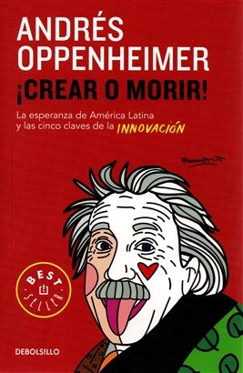
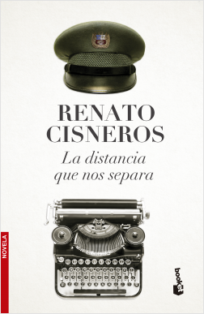

¿Qué debemos hacer como personas y países para avanzar en la economía de la innovación? ¿Qué debemos hacer para producir innovadores de talla mundial, como Steve Jobs? Para averiguarlo, Oppenheimer -el periodista latinoamericano más galardonado a escala internacional- explora los secretos de las brillantes trayectorias de varios innovadores en la actualidad.
A partir de casos como el de Pep Guardiola, el entrenador de futbol que llevó al club Barcelona a su época más gloriosa, el chef Gastón Acurio, quien convirtió la comida peruana en un motor de crecimiento económico, o Sir Richard Branson, el magnate británico que está creando una industria de turismo espacial, Oppenheimer extrae conclusiones concretas para ayudarnos a detonar el gran potencial creativo hispanoamericano.
Esta nueva edición de Usted S.A., libro que ha vendido más de 120,000 ejemplares en el Perú y Latinoamérica, incluye infografías que resumen muchos de los populares artículos publicados por Inés sobre temas de marketing personal, empleabilidad, marca digital, éxito profesional y satisfacción personal, mejores entrevistas de trabajo entre otros. También incluye códigos QR que permiten el acceso rápido y directo a sus cientos de artículos y videos para complementar los temas tratados en el libro. Sus videos han sido vistos por casi 6 millones de personas y sus artículos son leídos mensualmente por cientos de miles en la región.
Contrary to Internet marketing gossip, problems caused by Google updates are rarely irrecoverable—but you need the right knowledge. This book reveals:
La globalización, el cambio de compañías de unos sectores a otros, los nuevosmateriales y el creciente desarrollo tecnológico están provocando que las empresas desarrollen su actividad en un entorno globalizado, tormentoso e inestable, donde es preciso cambiar la forma de trabajar y de dirigir. Los cambios sesuceden, son continuos y no sólo hay que gestionarlos sino prevenirlos.
En este entorno cambiante la persona es, sin duda alguna, el principal activo de lasorganizaciones. La gestión de personal tiene que cambiar pasando desde la labor administrativa de antaño, donde no existe gestión, hasta la concepción moderna en la que los procesos administrativos pasan a un segundo plano y lo importante es la Dirección de Personas desde el instante en que los empleados entran a trabajar en la empresa. Este libro sirve como guía para implantar de formapráctica la Dirección de Personas en cualquier tipo de organización, se tratede una empresa industrial, una de servicios o cualquier tipo de organismo.
Un hijo busca a su padre. La necesidad es antigua pero se renueva generación a generación hasta que, por alguna circunstancia especial, alcanza un poder inusitado. Por ejemplo, si el hijo es Renato Cisneros, un escritor dotado y un periodista reconocido. Por ejemplo, si el padre es el ex general del ejército Luis Federico ‘El Gaucho’ Cisneros, uno de los militares más importantes de la historia peruana reciente. El resultado es una investigación tanto documental como emocional que cobra la forma de una novela valiente y necesaria, escrita con el vigor de quien contrapone la pluma a la espada y la delicadeza de quien, con derecho, cree ver en las palabras un espacio de conocimiento y conciliación.
